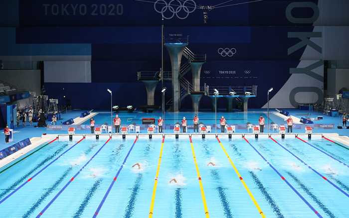

Back to main page

Swimming
Swimming is one of my favorite hobbies, as I have been swimming since the age of 6. In the beginning, I was a little scared but after a few lessons I just had a passion for it and now at the age of 19 I swim on a daily basis at my university swimming lanes. Here are some of the positions I use most frequently when I go swimming:
- Front Crawl
- The front crawl is considered the fastest and one of the most technically challenging strokes. It involves alternating arm movements and a steady flutter kick while facing down in the water.
- Back Crawl
- The back crawl is similar to the front crawl but performed while lying on your back, facing upward. It uses alternating arm movements and a continuous flutter kick for momentum.
- Breaststroke
- The breaststroke is a classic technique, keeping the swimmer's body steady while propelling forward with simultaneous arm and leg movements. It allows for a comfortable pace and easy breathing.
Back to top